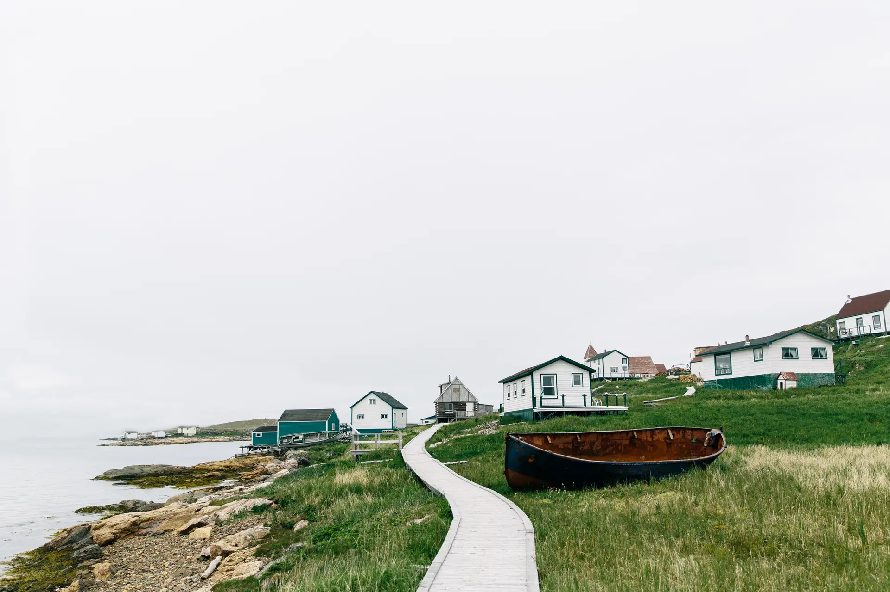
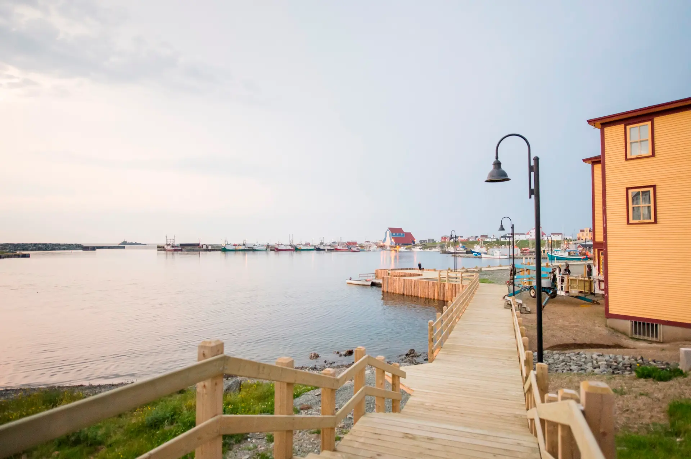

Our Newfoundland Photo Gallery
5 Featured Family LocationsGros Morne National Park
Majestic glacial fjords and hiking vistas.

Coastal Outport & Boardwalk
Traditional wooden boardwalks and outport houses.

Bonavista Harbor & Pier
Scenic coastal stairs and historic yellow buildings.
St. John's Jellybean Row
Vibrant historic colored downtown houses.
Twillingate Icebergs & Atlantic Waters
Majestic icebergs drifting along the northern coast.
Our Group Profile (8 Travelers)
Planning for 4 adults, 2 teenagers, and 2 seniors requires a thoughtful balance between comfort, pacing, and excitement. Seniors will appreciate stable accommodations and accessible viewpoints, teenagers will enjoy engaging coastal hikes and photography spots, and adults will manage the logistics.
Detailed Route & Driving Estimates (Island Loop)
Ferry Crossing: North Sydney, NS ➔ Port aux Basques, NL
~6 to 7 hours crossing time on Marine Atlantic. Cabins recommended for seniors and comfort.
Port aux Basques ➔ Gros Morne National Park
Distance: ~300 km | Driving Time: ~3.5 hours along the scenic Trans-Canada Highway (Route 1).
Gros Morne ➔ Twillingate (Iceberg Alley)
Distance: ~390 km | Driving Time: ~4.5 hours across central Newfoundland.
Twillingate ➔ Bonavista / Trinity Peninsula
Distance: ~280 km | Driving Time: ~3 hours through coastal outports.
Bonavista ➔ St. John's & Cape Spear
Distance: ~320 km | Driving Time: ~3.5 hours to the easternmost capital.
Total island driving distance is approximately 1,600 km one-way across the loop. Adding rest stops and scenic detours ensures a comfortable pace for seniors.
Multi-Generational Tips
- Pacing for Seniors: Limit continuous driving blocks to 2 hours maximum before a comfort/stretch stop. Ensure ground-floor or elevator accommodations.
- Teen Engagement: Interactive boat tours, puffins in Elliston, and coastal photography keep teens energized and off screens.
- Group Vehicles: With 8 people, splitting into 2 mid-sized SUVs provides comfortable seating across our family group.
Safety & Medical Note
Newfoundland has excellent regional medical clinics and hospitals in major hubs (Corner Brook, Gander, Clarenville, St. John's), but remote coastal areas can be isolated. Always travel with a stocked first-aid kit and senior prescription backups.
14-Day Family Itinerary (Optimized for 8 Travelers)
Balanced daily driving times and senior-friendly activity options.
Crossing the Cabot Strait
Board the Marine Atlantic ferry with reserved passenger cabins for the seniors' comfort. Arrive in Port aux Basques and drive ~3.5 hours along the stunning gulf coast to Gros Morne National Park. Settle into our accommodations.
Fjords & Tablelands
Take the Western Brook Pond boat tour (gentle walk, highly accessible for seniors and exciting for teens). Explore the Mars-like Tablelands with interpretive guides. Relaxed evenings enjoying local fish and chips.
Icebergs & Coastal Outports
Scenic drive across central Newfoundland (~4.5 hrs with rest stops). Visit Long Point Lighthouse, scout for icebergs, and visit the local craft shops.
Puffins & Historic Trinity
Head to Elliston for the easiest puffin viewing in North America (short, flat walk suitable for seniors). Explore historic Trinity and enjoy a coastal whale-watching boat tour.
The Capital City & Celebration
Discover Jellybean Row houses, Signal Hill (accessible by car for seniors), Cape Spear sunrise, and a celebratory seafood dinner for all 8 family members before heading home.
Newfoundland Flight & SUV Rental Plan
Travel details, flight route, trip dates, and vehicle assignments for our 8 family members.
Flight & Schedule Summary
Direct or connecting flights to Newfoundland's capital.
Late summer climate, ideal for coastal exploration.
SUV Rental & Passenger Assignments (2 Mid-sized SUVs)
1 SUV #1
Mid-sized SUV2 SUV #2
Mid-sized SUVWhy Flying & Renting Mid-Sized SUVs is Ideal for Our Group
Flying from Toronto Pearson to St. John's eliminates over a week of grueling multi-day driving and ferry transits, ensuring our seniors and teenagers arrive refreshed. Renting two mid-sized SUVs gives us nimble, comfortable transportation to navigate scenic coastal outports, national parks, and historic sites with ease.
Comprehensive Family Packing List
Tailored for 4 adults, 2 teenagers, and 2 seniors. Saved locally on your device.
Clothing & Outerwear (Layers for Coastal Weather)
Senior Comfort & Mobility Gear
Teen & Tech Essentials
Outdoor, Hiking & Wildlife Gear
Health, First Aid & Travel Docs
Newfoundland Trip AI Assistant
Ask anything about flights, itinerary, SUV assignments, or travel tips.